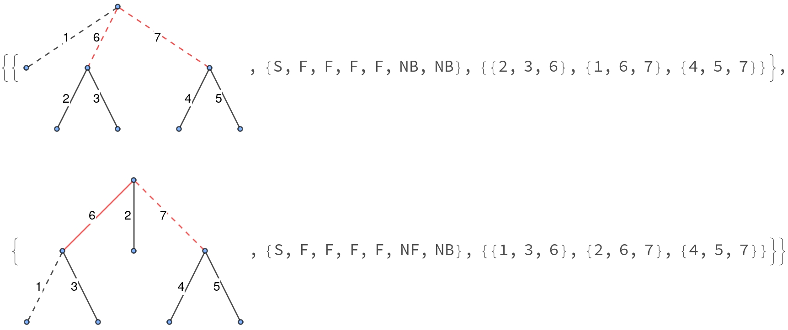

Non-derivative operators
Project site · code & supplementary material
Opening up baryon-number-violating operators
Code, topology files, and UV-completion data for a series of projects on tree-level ultraviolet completions of baryon-number-violating effective operators.
Derivative operators
Opening up derivative baryon-number-violating operators
arXiv:2611.08621
Shared resource
Topology files
Both projects use the same collection of tree-level topologies. The source code for generating the topologies is maintained in the GitHub repository, while the pre-generated topology archive is preserved on Zenodo.
The current topology-generation code contains a pedagogical Mathematica notebook and FeynArts model file used to generate the tree-level topologies.
We provide all topologies up to mass dimension 15 used in the projects, as well as some topologies at lower mass dimension that are not relevant for baryon number violation but may be useful for other studies. Other topologies can be generated with the Mathematica notebook or provided by the authors on request.
The pre-generated topology collection is archived on Zenodo (doi:10.5281/zenodo.24324313).
Mathematica topology files
topology_files.zip · 10 MB (175 MB unzipped) · Zenodo
Plain-text topology files
topology_text_files.zip · 1 MB (16 MB unzipped) · Zenodo
Topology PDFs
topology_pdfs.zip · 32 MB · Zenodo
File format
The Mathematica files are organized by the mass dimension of the associated non-derivative
operator and the number of external fermions and scalars. For example,
dim7_4F_1S.wl contains the two tree-level topologies for four external fermions
and one external scalar associated with a dimension-seven non-derivative operator:

Each entry consists of a Mathematica Graph object with labeled edges, a list of
external and internal particle types (S = external scalar/boson,
F = external fermion, NB = internal boson,
NF = internal fermion), and a list of vertices. E.g. in the first example, particles 2, 3, and 6 (as labeled in the graph) meet at one vertex, particles 1, 6, and 7 at another, and particles 4, 5, and 7 at the last vertex. Our topology format is redundant, the graph contains the same information as the last two entries together, so we also provide topology information in the form of plain text files, which can be used without Mathematica and also contain a numbering of the topologies. The dimension-seven example from above then takes the compact form
T[7][1] {"S", "F", "F", "F", "F", "NB", "NB"} {{2, 3, 6}, {1, 6, 7}, {4, 5, 7}}
T[7][2] {"S", "F", "F", "F", "F", "NF", "NB"} {{1, 3, 6}, {2, 6, 7}, {4, 5, 7}}
The first column defines the topology names T[mass dimension][unique integer];
the second and third columns match the corresponding entries in the Mathematica files.
Finally, we also provide pdf files of all topologies used in the article.
arXiv:2603.17050
Non-derivative UV completions
The topologies can be used to UV-complete non-renormalizable effective-field-theory operators. In the first paper, we apply them to non-derivative baryon-number-violating νSMEFT operators up to mass dimension 15.
BNV operator input files
BNV_operators.zip · 40 kB (300 kB unzipped)
UV-completion Mathematica notebook
Generate_UV_completions.zip · 191 kB (1 MB unzipped)
UV-completion data: Mathematica .wl
Organized by mass dimension, B and L
UV-completion data: compact .dat
Stripped-down text representation
The BNV operators were generated with Sym2Int. The pedagogical UV-completion notebook generates completions involving scalars, fermions, and vectors for non-derivative operators with tree-level topologies, and includes functions to check equivalence of UV completions, calculate amplitudes or operator expansions, test Higgs asymmetry, and draw the diagrams. It relies heavily on GroupMath. It also contains functions that aid with the import of our BNV UV completions.
The .wl archives grow rapidly with mass dimension. For example,
UV_Dim12_1B_1L.zip is about 186 MB compressed and 2.9 GB uncompressed.
For example, the zip file UV_Dim8_1B_1L.zip contains all UV completions for d=8 operators with B=1 and L=1, sorted by topology and operator. Inside, one can find UV_Dim8_1B_1L_T3_O1.wl, i.e. topology T3 and operator 1, which takes the form

F[8] and S[3] follow the naming scheme of the
article and notebook. A trailing c denotes charge conjugation. The same dimension-8 UV completions in .dat format only list which internal particles are in the diagram, e.g. in UV_Dim8_1B_1L_T3.dat we find
O_{8,(1,1)}^1 F[8]F[8]S[4] F[8]F[14]V[1] F[6]F[8]V[1] F[4]F[8]V[2] F[1]F[8]V[2] F[4]F[14]S[3] F[1]F[6]S[3]
O_{8,(1,1)}^2 F[8]F[14]V[1] F[6]F[8]V[1] F[3]F[8]S[4] F[14]F[14]S[1] F[6]F[6]S[1] F[3]F[14]V[2] F[3]F[6]V[2]arXiv:2611.08621
Derivative UV completions
The follow-up project systematically constructs tree-level UV completions of derivative baryon-number-violating operators up to mass dimension 12. It uses the same common topology archive above, but a modified code/notebook workflow and a separate set of UV-completion data.
Keeping the derivative code and its generated UV completions in their own repository folders avoids mixing paper-specific inputs and outputs while still sharing the common topology archive.
Contact
Questions, corrections, and comments are welcome.
heeck@virginia.edu